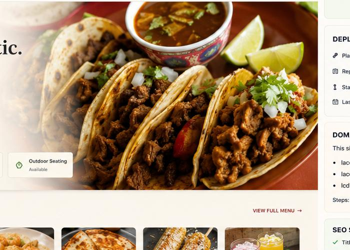
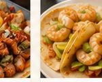
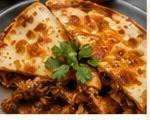

Fresh tacos, burritos, quesadillas, tortas and homemade favorites crafted with love. Family‑run since day one.
Slow‑braised beef tucked into crispy tortillas, served with rich consommé, onions, cilantro & lime.

Our signature marinated pork carved fresh off the spit, topped with juicy pineapple and salsa roja. This dish is a local favourite and a top seller among regulars.

Shredded chicken simmered in tomato adobo sauce, layered with melted Oaxaca cheese inside a handmade tortilla. Served with pico de gallo and sour cream, it’s comfort food at its finest.
La Cocina de Mamá is a family‑run Mexican restaurant in East Harlem. Our recipes come straight from our kitchen back home, using handmade tortillas, fresh ingredients and secret family spices. We strive to create a warm, welcoming space where every diner feels like part of our family.
Learn More"The al pastor tacos and chicken tinga quesadilla were outstanding — authentic flavors and generous portions!" — N.Y. Local
"Warm, cozy atmosphere with friendly service. Best Mexican food in East Harlem." — Google Reviewer
"Fresh handmade tortillas and rich flavors make this place our go‑to for tacos." — Neighborhood Resident
Address: 154 E 109th St, New York, NY 10029
Phone: (212) 348‑3619
Hours: Mon–Thu 11 AM–10:30 PM;
Fri 9 AM–10:30 PM; Sat 9:30 AM–10:30 PM; Sun 11 AM–10 PM